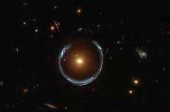

01 / GRAVITATIONAL LENSING
Quasar host galaxies through strong lensing
Using strongly lensed quasars to investigate the mass distribution of quasar host systems and the galaxies that surround them.
PhD student in Astronomy at The Ohio State University and planetarium presenter at the Arne Slettebak Planetarium.

01 — A LITTLE ABOUT ME
I’m an astrophysics researcher interested in how we can use observations and computational models to understand objects and structures across the universe.
My interests span gravitational lensing and quasars, brown dwarf atmospheres, and the evolution and dynamics of the Milky Way. I’m drawn to problems where careful physical reasoning meets modern data analysis.
Explore my research02 — RESEARCH & SELECTED WORK

Using strongly lensed quasars to investigate the mass distribution of quasar host systems and the galaxies that surround them.

Studying brown dwarf atmospheres through high-resolution spectroscopy, atmospheric models, and Bayesian retrieval methods.

Exploring how stars inherit the kinematics of their birth environments, and how their motions evolve as they move away from their natal molecular clouds.
03 — IN THE NEWS
03 — OUTREACH & COMMUNICATION

Science is most meaningful when it can be shared. I enjoy opportunities to communicate astronomy and astrophysics beyond the research community, making complex ideas accessible and engaging to wider audiences.
Through presentations, educational events, and public engagement, I hope to encourage curiosity about the universe and inspire others to explore the questions that drive scientific discovery.
03 — CONTACT
For research conversations, collaborations, or just to connect, feel free to reach out.
Send an email